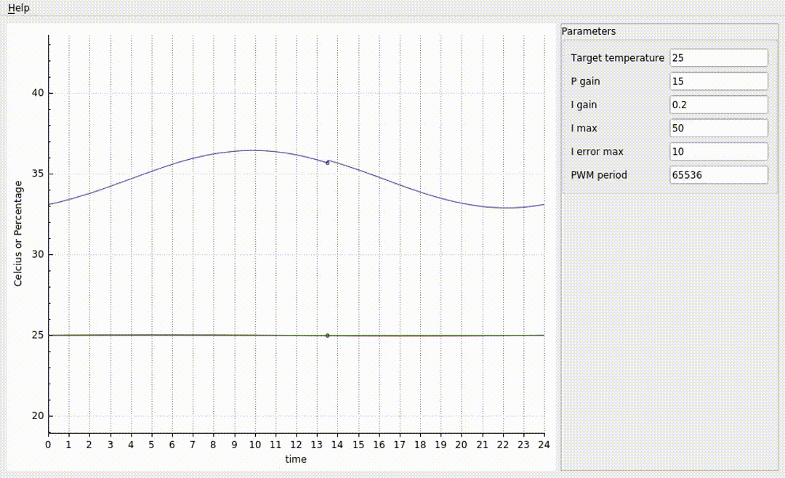

Project to control the temperature of a greenhouse using ROS
How to run applicationmake 1. It will create the image 2. It will create the container 3. It will build the project using colcon_build 4. It will call the launch file that starts all the necessary nodes When you are finished make stop_container To generate documentationmake –directory=doxygen Controlling the Temperature of a GreenhouseIn order to control the temperature of a greenhouse, we create four nodes: 1. One node for the controller, which will be listening to the temperature sensors topics 2. Two nodes for the two temperature sensors 3. A gui node to monitor the temperature progress and change useful controller parameters Requirements: 1. If no temperature readings are available, the controller tells the window to be closed Changing target temperature Notice how the window openness changes throughtout the day, since the heat exchange (due to the sun exposure and the temperature gradient) also changes throughout the day. Changing the PWM periodWhen choosing a smaller pwm period, the window set of available positions is smaller, and the command looks more “staircase-like”. Controlling the temperature with a smalle PWM period is still possible nonetheless. Node GraphWithout the simulatorWithout the simulator |